산업안전산업기사 (2013-08-18 기출문제)
1과목: 산업안전관리론
1. 다음 중 사람이 인력(중력)에 의하여 건축물, 구조물, 가설물, 수목, 사다리 등의 높은 장소에서 떨어지는 재해의 발생 형태를 무엇이라 하는가?
- 추락
- 비래
- 낙하
- 전도
(정답률: 90%)

2. 다음 중 사고예방대책의 기본원리 5단계에 있어 3단계에 해당하는 것은?
- 분석
- 안전조직
- 사실의 발견
- 시정방법의 선정
(정답률: 58%)
3. 다음 중 무재해 운동의 3요소에 해당되지 않는 것은?
- 이념
- 기법
- 실천
- 경쟁
(정답률: 88%)
4. 교육훈련의 효과는 5관을 최대한 활용하여야 하는데 다음 중 효과가 가장 큰 것은?
- 청각
- 시각
- 촉각
- 후각
(정답률: 83%)
5. 다음 중 산업안전보건법령상 특별안전・보건교육 대상의 작업에 해당하지 않는 것은?
- 방사선 업무에 관계되는 작업
- 전압이 50V인 정전 및 활선작업
- 굴착면의 높이가 3m 되는 암석의 굴착작업
- 게이지압력을 2kgf/cm2 이상으로 사용하는 압력용기 설치 및 취급작업
(정답률: 86%)
6. 다음 중 맥그리거(McGregor)의 X・Y이론에서 Y이론의 관리처방에 해당하는 것은?
- 분권화의 권한의 위임
- 경제적 보상체제의 강화
- 권위주의적 리더십의 확립
- 면밀한 감독과 엄격한 통제
(정답률: 58%)
7. 다음 중 인지과정 착오의 요인과 가장 거리가 먼 것은?
- 정서 불안정
- 감각차단 현상
- 작업자의 기능미숙
- 생리・심리적 능력의 한계
(정답률: 79%)
8. 근로자의 작업 수행 중 나타나는 불안전한 행동의 종류로 볼 수 없는 것은?
- 인간 과오로 인한 불안전한 행동
- 태도 불량으로 인한 불안전한 행동
- 시스템 과오로 인한 불안전한 행동
- 지식 부족으로 인한 불안전한 행동
(정답률: 77%)
9. 다음 중 산업안전보건법상 사업내 안전・보건교육에 있어 교육대상과 교육시간이 잘못 연결된 것은?
- 사무직 종사 근로자의 정기교육 : 매분기 3시간 이상
- 일용근로자의 작업내용 변경시의 교육 : 1시간 이상
- 건설 일용근로자의 건설업 기초안전・보건교육 : 2시간 이상
- 관리감독자의 지위에 있는 사람의 정기교육 : 연간 16시간 이상
(정답률: 77%)
10. 산업안전보건법에 따라 안전・보건표지에 사용된 색채의 색도기준이 “7.5R 4/14"일 때 이 색채의 명도 값으로 옳은 것은?
- 7.5
- 4
- 14
- 4/14
(정답률: 61%)
11. 위험예지훈련 4R(라운드)의 진행방법에서 3R(라운드)에 해당하는 것은?
- 목표설정
- 본질추구
- 현상파악
- 대책수립
(정답률: 82%)
12. 레빈(Lewin)의 법칙 B = f(P⋅E)에서 인간 행동(B)은 개체(P)와 환경조건(E)과의 상호 함수관계를 갖는다. 다음 중 환경조건(E)이 나타내는 것은?
- 지능
- 소질
- 적성
- 인간관계
(정답률: 89%)
13. 도수율이 12.57, 강도율이 17.45인 사업장에서 한 근로자가 평생 근무한다면 며칠의 근로손실이 발생 하겠는가? (단 1인 근로자의 평생근로시간은( 105 시간이다.)
- 1257일
- 126일
- 1745일
- 175일
(정답률: 61%)
14. 다음 중 안전점검 대상과 가장 거리가 먼 것은?
- 인원 배치
- 방호 장치
- 작업 환경
- 작업 방법
(정답률: 75%)
15. 다음 중 학습정도(level of learning)의 4단계에 포함되지 않는 것은?
- 지각한다.
- 적용한다.
- 인지한다.
- 정리한다.
(정답률: 71%)
16. 다음 중 사업장 내 안전・보건교육을 통하여 근로자가 함양 및 체득될 수 있는 사항과 가장 거리가 먼 것은?
- 잠재위험 발견 능력
- 비상사태 대응 능력
- 재해손실비용분석 능력
- 직면한 문제의 사고 발생 가능성 예지 능력
(정답률: 84%)
17. 다음 중 재해 통계적 원인 분석시 특성과 요인관계를 도표로 하여 어골상(魚骨象)으로 세분화 한 것은?
- 파레토도
- 특성요인도
- 크로스도
- 관리도
(정답률: 81%)
18. 강의의 성과는 강의계획의 준비정도에 따라 일반적으로 결정되는데 다음 중 강의계획의 4단계를 올바르게 나열한 것은?
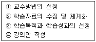
- ③ → ② → ① → ④
- ② → ③ → ① → ④
- ② → ① → ③ → ④
- ② → ③ → ④ → ①
(정답률: 62%)
19. 다음은 안전화의 정의에 관한 설명이다. A와 B에 해당하는 값으로 옳은 것은?
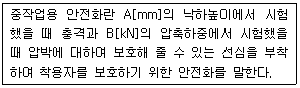
- A : 250mm, B : 4.5kN
- A : 500mm, B : 5.0kN
- A : 750mm, B : 7.5kN
- A : 1000mm, B : 15.0kN
(정답률: 52%)
20. 다음 [그림]에 나타낸 리더와 부하와의 관계에서 이에 해당되는 리더의 유형은?
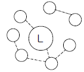
- 민주형
- 자유방임형
- 권위형
- 권력형
(정답률: 73%)
2과목: 인간공학 및 시스템안전공학
21. 모든 시스템 안전 프로그램 중 최초 단계의 분석으로 시스템 내의 위험요소가 어떤 상태에 있는지를 정성적으로 평가하는 방법은?
- CA
- PHA
- FHA
- FMEA
(정답률: 74%)
22. 다음 중 건구온도가 30℃, 습구온도가 27℃ 일 때 사람들이 느끼는 불쾌감의 정도를 설명한 것으로 가장 적절한 것은?
- 대부분의 사람이 불쾌감을 느낀다.
- 거의 모든 사람이 불쾌감을 느끼지 못한다.
- 일부분의 사람이 불쾌감을 느끼기 시작한다.
- 일부분의 사람이 쾌적함을 느끼기 시작한다.
(정답률: 62%)
23. 다음과 같은 FT도에서 minimal cut set으로 옳은 것은?
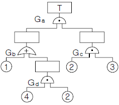
- (2, 3)
- (1, 2, 3)
- (1, 2, 3)
(2, 3, 4) - (1, 2, 3)
(1, 3, 4)
(정답률: 56%)
24. 인간-기계 시스템에서 자동화 정도에 따라 분류할 때 감시제어(supervisory control) 시스템에서 인간의 주요 기능과 가장 거리가 먼 것은?
- 간섭(intervene)
- 계획(plan)
- 교시(teach)
- 추적(pursuit)
(정답률: 56%)
25. 다음 중 수명주기(Life Cycle) 6단계에서 “운전단계”와 가장 거리가 먼 것은?
- 사고조사 참여
- 기술변경의 개발
- 고객에 의한 최종 성능검사
- 최종 생산물의 수용여부 결정
(정답률: 40%)
26. 다음 중 결함수분석법에서 일정 조합 안에 포함되어 있는 기본사상들이 모두 발생하지 않으면 틀림없이 정상사상(top event)이 발생되지 않는 조합을 무엇이라고 하는가?
- 컷셋(cut set)
- 패스셋(path set)
- 부울대수(Boolean algebra)
- 결함수셋(fault tree set)
(정답률: 74%)
27. 공정분석에 있어 활용하는 공정도(process chart)의 도시기호 중 가공 또는 작업을 나타내는 기호는?
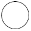
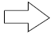
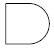
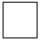
(정답률: 50%)
28. 안전성 평가의 기본원칙을 6단계로 나누었을 때 다음 중 가장 먼저 수행해야 되는 것은?
- 정성적 평가
- 작업조건 측정
- 정량적 평가
- 관계자료의 정비검토
(정답률: 55%)
29. 다음 중 제어장치에서 조정장치의 위치를 1cm 움직였을 때 표시장치의 지침이 4cm 움직였다면 이 기기의 C/R 비는 약 얼마인가?
- 0.25
- 0.6
- 1.5
- 1.7
(정답률: 79%)
30. 한 겨울에 햇볕을 쬐면 기온은 차지만 따스함을 느끼는 것은 다음 중 어떤 열교환 방법에 의한 것인가?
- 대류
- 복사
- 전도
- 증발
(정답률: 74%)
31. 다음의 감각기관 중 반응속도가 가장 빠른 것은?
- 시각
- 촉각
- 후각
- 미각
(정답률: 56%)
32. 다음 중 인체치수 측정 자료의 활용을 위한 적용원리로 볼 수 없는 것은?
- 평균치의 활용
- 조절범위의 설정
- 임의 선택 자료의 활용
- 최대치수와 최소치수의 설정
(정답률: 83%)
33. FT도에 사용되는 기호 중 다음 그림에 해당하는 것은?
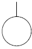
- 생략사상
- 부정사상
- 결함사상
- 기본사상
(정답률: 86%)
34. 다음 중 공장설비의 고장원인 분석 방법으로 적당하지 않은 것은?
- 고장원인 분석은 언제, 누가, 어떻게 행하는가를 그때의 상황에 따라 결정한다.
- P-Q 분석도에 의한 고장대책으로 빈도가 높은 고장에 대하여 근본적인 대책을 수립한다.
- 동일기종이 다수 설치되었을 때는 공통된 고장 개소, 원인 등을 규명하여 개선하고 자료를 작성한다.
- 발생한 고장에 대하여 그 개소, 원인, 수리상의 문제점, 생산에 미치는 영향 등을 조사하고 재발 방지계획을 수립한다.
(정답률: 58%)
35. 작업형태나 작업조건 중에서 다른 문제가 생겨 필요사항을 실행 할 수 없는 경우나 어떤 결함으로부터 파생하여 발생하는 오류를 무엇이라 하는가?
- commission error
- command error
- extraneous error
- secondary error
(정답률: 58%)
36. 다음 중 시각에 관한 설명으로 옳은 것은?
- vernier acuity - 눈이 식별할 수 있는 표적의 최소 모양
- minimum separable acuity - 배경과 구별하여 탐지 할 수 있는 최소의 점
- stereoscopic acuity - 거리가 있는 한 물체의 상이 두눈의 망막에 맺힐 때 그 상의 차이를 구별하는 능력
- minimum perceptible acuity - 하나의 수직선이 중간에서 끊겨 아래 부분이 옆으로 옮겨진 경우에 미세한 치우침을 구별하는 능력
(정답률: 49%)
37. 다음 중 역치(threshold value)의 설명으로 가장 적절한 것은?
- 표시장치의 설계와 역치는 아무런 관계가 없다.
- 에너지의 양이 증가할수록 차이역치는 감소한다.
- 역치는 감각에 필요한 최소량의 에너지를 말한다.
- 표시장치를 설계할 때는 신호의 강도를 역치 이하로 설계하여야 한다.
(정답률: 60%)
38. 다음 중 주어진 작업에 대하여 필요한 소요조명(fc)을 구하는 식으로 옳은 것은?
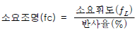
- 소
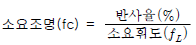
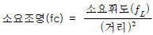
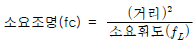
(정답률: 50%)
39. 다음 중 청각적 표시장치에서 300m 이상의 장거리용 경보기에 사용하는 진동수로 가장 적절한 것은?
- 800Hz 전후
- 2200Hz 전후
- 3500Hz 전후
- 4000Hz 전후
(정답률: 68%)
40. 다음 중 인간-기계 시스템을 설계하기 위해 고려해야 할 사항으로 가장 적합하지 않은 것은?
- 동작 경제의 원칙이 만족되도록 고려하여야 한다.
- 대상이 되는 시스템이 위치할 환경 조건이 인간에 대한 한계치를 만족하는가의 여부를 조사한다.
- 인간과 기계가 모두 복수인 경우, 종합적인 효과 보다 기계를 우선적으로 고려한다.
- 인간이 수행해야 할 조작이 연속적인가 불연속적인가를 알아보기 위해 특성조사를 실시한다.
(정답률: 86%)
3과목: 기계위험방지기술
41. 다음 중 산소-아세틸렌 가스용접시 역화의 원인과 가장 거리가 먼 것은?
- 토치의 과열
- 팁의 이물질 부착
- 산소 공급의 부족
- 압력조정기의 고장
(정답률: 77%)
42. 어떤 부재의 사용하중은 200kgf이고, 이의 파괴하중은 400kgf이다. 정격하중을 100kgf로 가정하고 설계한다면 안전율은 얼마인가?
- 0.25
- 0.5
- 2
- 4
(정답률: 50%)
43. 다음 중 지름이 60cm이고, 20rpm으로 회전하는 롤러에 적합한 급정지장치의 성능으로 옳은 것은?
- 앞면 롤러 원주의 1/1.5 거리에서 급정지
- 앞면 롤러 원주의 1/2 거리에서 급정지
- 앞면 롤러 원주의 1/2.5 거리에서 급정지
- 앞면 롤러 원주의 1/3 거리에서 급정지
(정답률: 60%)
44. 다음 중 선반 작업시 주의사항으로 틀린 것은?
- 회전 중에 가공품을 직접 만지지 않는다.
- 공작물의 설치가 끝나면, 척에서 렌치류는 곧바로 제거 한다.
- 칩(chip)이 비산할 때는 보안경을 쓰고 방호판을 설치하여 사용한다.
- 돌리개는 적정 크기의 것을 선택하고, 심압대 스핀들은 가능하면 길게 나오도록 한다.
(정답률: 80%)
45. 다음 중 프레스금형을 부착, 해체 또는 조정 작업을 하는 때에 사용해야 하는 안전장치는?
- 안전블록
- 안전방책
- 수인식 방호장치
- 손쳐내기식 방호장치
(정답률: 78%)
46. 다음 중 연삭숫돌의 이상 유・무를 확인하기 위한 시운전 시간으로 가장 적절한 것은?
- 작업시작 전 3분 이상, 연삭숫돌 교체 후 1분 이상
- 작업시작 전 30초 이상, 연삭숫돌 교체 후 1분 이상
- 작업시작 전 1분 이상, 연삭숫돌 교체 후 3분 이상
- 작업시작 전 1분 이상, 연삭숫돌 교체 후 1분 이상
(정답률: 82%)
47. 다음 중 선반작업에서 가늘고 긴 공작물의 처짐이나 휨을 방지하는 부속장치는?
- 방진구
- 심봉
- 돌리개
- 면판
(정답률: 68%)
48. 산업안전보건법에서 정한 양중기의 종류에 해당하지 않는 것은?
- 리프트
- 호이스트
- 곤돌라
- 컨베이어
(정답률: 68%)
49. 다음 중 위험구역에서 가드까지의 거리가 200mm인 롤러기에 가드를 설치하는데 허용 가능한 가드의 개구부 간격으로 옳은 것은?
- 최대 20mm
- 최대 30mm
- 최대 36mm
- 최대 40mm
(정답률: 39%)
50. 기계의 기능적인 면에서 안전을 확보하기 위하여 반자동 및 자동제어장치의 경우에는 적극적으로 안전화 대책을 강구하여야 한다. 이때 2차적 적극적 대책에 속하는 것은?
- 울을 설치한다.
- 급정지장치를 누른다.
- 회로를 개선하여 오동작을 방지한다.
- 연동 장치된 방호장치가 작동되게 한다
(정답률: 55%)
51. 보일러수 속에 유지(油脂)류, 용해 고형물, 부유물 등의 농도가 높아지면 드럼 수면에 안정한 거품이 발생하고, 또한 거품이 증가하여 드럼의 기실(氣室)에 전체로 확대되는 현상을 무엇이라 하는가?
- 포밍(forming)
- 프라이밍(priming)
- 수격현상(water hammer)
- 공동화현상(cavitation)
(정답률: 83%)
52. 산업안전보건법령에 따라 양중기용 와이어로프의 사용금지 기준으로 옳은 것은?
- 지름의 감소가 공칭지름의 3%를 초과하는 것
- 지름의 감소가 공칭지름의 5%를 초과하는 것
- 와이어로프의 한 꼬임에서 끊어진 소선(素線)의 수가 7% 이상인 것
- 와이어로프의 한 꼬임에서 끊어진 소선(素線)의 수가 10% 이상인 것
(정답률: 64%)
53. 다음 중 드릴 작업시 안전수칙으로 적절하지 않은 것은?
- 장갑의 착용을 금한다.
- 드릴은 사용 전에 검사한다.
- 작업자는 보안경을 착용한다.
- 드릴의 이송은 최대한 신속하게 한다.
(정답률: 83%)
54. 다음 중 산업안전보건법령상 컨베이어에 부착해야 하는 안전장치와 가장 거리가 먼 것은?
- 해지장치
- 비상정지장치
- 덮개 또는 울
- 역주행방지장치
(정답률: 74%)
55. 다음 중 재료에 있어서의 결함에 해당하지 않는 것은?
- 미세 균열
- 용접 불량
- 불순물 내재
- 내부 구멍
(정답률: 60%)
56. 다음은 목재가공용 둥근톱에서 분할날에 관한 설명이다. ( )안의 내용을 올바르게 나타낸 것은?(문제 오류로 가답안 발표시 2번으로 발표되었으며 확정답안 발표시 전항 정답처리 되었습니다. 여기서는 가답안인 2번을 누르면 정답처리 됩니다.)
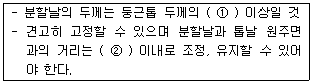
- ① : 10mm, ② : 1.5배
- ① : 12mm, ② : 1.1배
- ① : 15mm, ② : 1.1배
- ① : 20mm, ② : 2배
(정답률: 74%)
57. 다음은 지게차의 헤드가드에 관한 기준이다. ( ) 안에 들어갈 내용으로 옳은 것은?
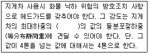
- 1.5배
- 2배
- 3배
- 5배
(정답률: 77%)
58. 다음 중 프레스 작업에 있어 시계(視界)가 차단되지는 않으나 확동식 클러치 프레스에는 사용상의 제한이 발생하는 방호장치는?
- 게이트가드
- 광전식방호장치
- 양수조작장치
- 프릭션 다이얼피드
(정답률: 52%)
59. 다음 중 셰이퍼의 방호장치와 가장 거리가 먼 것은?
- 방책
- 칸막이
- 칩받이
- 시건장치
(정답률: 62%)
60. 다음 중 기계설비에 있어서 방호의 기본 원리와 가장 거리가 먼 것은?
- 위험제거
- 덮어씌움
- 위험의 검출
- 위험에 적응
(정답률: 42%)
4과목: 전기 및 화학설비위험방지기술
61. 정전용량 10㎌인 물체에 전압을 1000V 로 충전하였을 때 물체가 가지는 정전에너지는 몇 Joule 인가?
- 0.5
- 5
- 14
- 50
(정답률: 56%)
62. 다음 중 일반적으로 인체에 1초 동안 전류가 흘렀을 때 정상적인 심장의 기능을 상실할 수 있는 전류의 크기는 어느 정도인가?(오류 신고가 접수된 문제입니다. 반드시 정답과 해설을 확인하시기 바랍니다.)
- 50mA
- 75mA
- 125mA
- 165mA
(정답률: 48%)
63. 접지 저항계로 3개의 접지봉의 접지저항을 측정한 값이 각각 R1, R2, R3 일 경우 접지저항 G1 으로 옳은 것은?(오류 신고가 접수된 문제입니다. 반드시 정답과 해설을 확인하시기 바랍니다.)
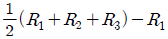
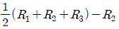
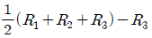
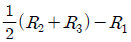
(정답률: 52%)
64. 다음 중 전기 설비의 방폭구조를 나타내는 기호로 틀린 것은?
- 내압방폭구조 : d
- 압력방폭구조 : p
- 안전증방폭구조 : e
- 본질안전방폭구조 : s
(정답률: 79%)
65. 다음 중 제전기의 종류에 해당하지 않는 것은?
- 전류제어식
- 전압인가식
- 자기방전식
- 방사선식
(정답률: 40%)
66. 다음 중 전기화재의 원인에 관한 설명으로 가장 거리가 먼 것은?
- 단락된 순간의 전류는 정격전류보다 크다.
- 전류에 의해 발생되는 열은 전류의 제곱에 비례하고, 저항에 비례한다.
- 누전, 접촉불량 등에 의한 전기화재는 배선용차단기나 누전차단기로 예방이 가능하다.
- 전기화재의 발화형태별 원인 중 가장 큰 비율을 차지하는 것은 전기배선의 단락이다.
(정답률: 42%)
67. 교류아크용접기의 자동전격방지기는 대상으로 하는 용접기의 주회로를 제어하는 장치를 가지고 있어, 용접봉의 조작에 따라 용접할 때에만 용접기의 주회로를 형성하고, 그 외에는 용접기의 출력측의 무부하전압을 얼마 이하로 저하시키도록 동작하는 장치를 말하는가?
- 15V
- 25V
- 30V
- 50V
(정답률: 64%)
68. 산업안전보건법상 다음 내용에 해당하는 폭발위험장소는?
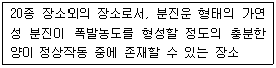
- 0종 장소
- 1종 장소
- 21종 장소
- 22종 장소
(정답률: 68%)
69. 다음 중 절연용 고무장갑과 가죽장갑의 안전한 사용방법으로 가장 적합한 것은?
- 활선작업에서는 가죽장갑만 사용한다.
- 활선작업에서는 고무장갑만 사용한다.
- 먼저 가죽장갑을 끼고 그 위에 고무장갑을 낀다.
- 먼저 고무장갑을 끼고 그 위에 가죽장갑을 낀다.
(정답률: 60%)
70. 산업안전보건법령에 따라 충전전로 인근에서 차량, 기계 장치 등의 작업이 있는 경우에는 차량 등을 충전전로의 충전부로부터 얼마 이상 이격시켜 유지하여야 하는가?
- 1m
- 2m
- 3m
- 5m
(정답률: 40%)
71. 다음 중 분해 폭발하는 가스의 폭발방지를 위하여 첨가하는 불활성가스로 가장 적합한 것은?
- 산소
- 질소
- 수소
- 프로판
(정답률: 75%)
72. 휘발유를 저장하던 이동저장탱크에 등유나 경유를 이동 저장탱크의 밑 부분으로부터 주입할 때에 액표면의 높이가 주입관의 선단의 높이를 넘을 때까지 주입속도는 몇 m/s 이하로 하여야 하는가?
- 0.5
- 1.0
- 1.5
- 2.0
(정답률: 69%)
73. 산업안전보건법령에 따라 인화성 액체를 저장・취급하는 대기압 탱크에 가압이나 진공 발생시 압력을 일정하게 유지하기 위하여 설치하여야 하는 장치는?
- 통기밸브
- 체크밸브
- 스팀트랩
- 프레임어레스트
(정답률: 52%)
74. 다음 중 LPG에 대한 설명으로 적절하지 않은 것은?
- 강한 독성이 있다.
- 질식의 우려가 있다.
- 누설시 인화, 폭발성이 있다.
- 가스의 비중은 공기보다 크다.
(정답률: 74%)
75. 다음 중 폭굉유도거리에 대한 설명으로 틀린 것은?
- 압력이 높을수록 짧다.
- 점화원의 에너지가 강할수록 짧다.
- 정상연소속도가 큰 혼합가스일수록 짧다.
- 관속에 방해물이 없거나 관의 지름이 클수록 짧다.
(정답률: 61%)
76. 다음 중 공정안전보고서의 심사결과 구분에 해당하지 않는 것은?
- 적정
- 부적정
- 보류
- 조건부 적정
(정답률: 57%)
77. 메탄(CH4) 100mol 이 산소 중에서 완전 연소하였다면 이 때 소비된 산소량 몇 mol 인가?
- 50
- 100
- 150
- 200
(정답률: 56%)
78. 공기 중 산화성이 높아 반드시 석유, 경유 등의 보호액에 저장해야 하는 것은?
- Ca
- P4
- K
- S
(정답률: 54%)
79. 25℃ 1기압에서 공기 중 벤젠(C6H6)의 허용농도가 10ppm 일 때 이를 mg/m3 의 단위로 환산하면 약 얼마인가? (단, C, H 의 원자량은 각각 12, 1 이다.)
- 28.7
- 31.9
- 34.8
- 45.9
(정답률: 51%)
80. 다음 중 칼륨에 의한 화재 발생시 소화를 위해 가장 효과적인 것은?
- 건조사 사용
- 포화기 사용
- 이산화탄소 사용
- 할로겐화합물 소화기 사용
(정답률: 61%)
5과목: 건설안전기술
81. 안전난간은 구조적으로 가장 취약한 지점에서 가장 취약한 방향으로 작용하는 최소 얼마 이상의 하중에 견딜 수 있는 구조이어야 하는가?
- 100kg
- 150kg
- 200kg
- 250kg
(정답률: 71%)
82. 다음 중 유해・위험방지계획서 제출 시 첨부해야하는 서류와 가장 거리가 먼 것은?
- 건축물 각 층 평면도
- 기계・설비의 배치도면
- 원재료 및 제품의 취급, 제조 등의 작업방법의 개요
- 비상조치계획서
(정답률: 33%)
83. 산업안전보건관리비 중 안전관리자 등의 인건비 및 각종 업무수당 등의 항목에서 사용할 수 없는 내역은?
- 교통 통제를 위한 교통정리 신호수의 인건비
- 공사장 내에서 양중기・건설기계 등의 움직임으로 인한 위험으로부터 주변 작업자를 보호하기 위한 유도자의 인건비
- 건설용 리프의 운전자 인건비
- 고소작업대 작업 시 낙하물 위험예방을 위한 하부통제 등 공사현장의 특성에 따라 근로자 보호만을 목적으로 배치된 유도자의 인건비
(정답률: 64%)
84. 건설장비 크레인의 헤지(Hedge)장치란?
- 중량초과시 부져(Buzzer)가 울리는 장치이다.
- 와이어 로프의 후크이탈 방지장치이다.
- 일정거리 이상을 권상하지 못하도록 제한시키는 장치이다.
- 크레인 자체에 이상이 있을 때 운전자에게 알려주는 신호 장치이다.
(정답률: 66%)
85. 동바리로 사용하는 파이프 서포트에 대한 준수사항과 가장 거리가 먼 것은?
- 파이프 서포트를 3개 이상 이어서 사용하지 않도록 할 것
- 파이프 서포트를 이어서 사용하는 경우에는 4개 이상의 볼트 또는 전용철물을 사용하여 이을 것
- 높이가 3.5m를 초과하는 경우에는 높이 2m 이내마다 수평연결재를 2개 방향으로 만들 것
- 파이프 서포트 사이에 교차가새를 설치하여 보강 조치할 것
(정답률: 43%)
86. 추락방지를 위한 안전방망 설치기준으로 옳지 않은 것은?
- 작업면으로부터 망의 설치지점까지의 수직거리는 10m를 초과하지 않도록 한다.
- 안전방망 수평으로 설치한다.
- 망의 처짐은 짧은 변 길이의 10% 이하가 되도록 한다.
- 건축물 등의 바깥쪽으로 설치하는 경우 망의 내민 길이는 벽면으로부터 3m 이상이 되도록 한다.
(정답률: 54%)
87. 산업안전보건기준에 관한 규칙에 따른 토사 굴착 시 굴착면의 기울기기준으로 옳지 않은 것은?(2021년 11월 19일 개정된 규정 적용됨)
- 보통흙인 습지 - 1:1 ~ 1:1.5
- 풍화암 - 1:1.0
- 연암 - 1:1.0
- 보통흙의 건지 - 1:1.2 ~1:5
(정답률: 69%)
88. 거푸집에 가해지는 콘크리트의 측압에 관한 설명 중 옳지 않은 것은?
- 슬럼프가 클수록 크다.
- 거푸집의 수평단면이 클수록 크다.
- 타설속도가 빠를수록 크다.
- 거푸집의 강성이 클수록 작다.
(정답률: 51%)
89. 콘크리트 슬럼프 시험방법에 대한 설명 중 옳지 않은 것은?
- 슬럼프 시험기구는 강제평판, 슬럼프 테스트 콘, 다짐 막대, 측정기기로 이루어진다.
- 콘크리트 타설 시 작업의 용이성을 판단하는 방법이다.
- 슬럼프 콘에 비빈 콘크리트를 같은 양의 3층으로 나누어 25회씩 다지면서 채운다.
- 슬럼프는 슬럼프 콘을 들어올려 강제평판으로부터 콘크리트가 무너져 내려앉은 높이까지의 거리를 mm로 표시한 것이다.
(정답률: 43%)
90. 다음은 낙하물 방지망 또는 방호선반을 설치하는 경우에 준수하여야 할 사항이다. ( )안에 알맞은 내용은?
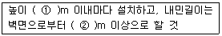
- ① : 5, ② : 1
- ① : 5, ② : 2
- ① : 10, ② : 1
- ① : 10, ② : 2
(정답률: 74%)
91. 지반에서 발생하는 히빙 현상의 직접적인 대책과 가장 거리가 먼 것은?
- 굴착주변의 상재하중을 제거한다.
- 토류벽의 배면토압을 경감시킨다.
- 굴착저면에 토사 등 인공중력을 가중시킨다.
- 수밀성 있는 흙막이 공법을 채택한다.
(정답률: 40%)
92. 추락재해 방지용 방망의 신품에 대한 인장강도는 얼마인가? (단, 그물코의 크기가 10cm 이며, 매듭 없는 방망)
- 220kg
- 240kg
- 260kg
- 280kg
(정답률: 67%)
93. 철골 작업을 중지해야 할 강설량 기준으로 옳은 것은?
- 강설량이 시간당 1mm 이상인 경우
- 강설량이 시간당 5mm 이상인 경우
- 강설량이 시간당 1cm 이상인 경우
- 강설량이 시간당 5cm 이상인 경우
(정답률: 78%)
94. 아스팔트 포장도로의 노반의 파쇄 또는 토사 중에 있는 암석제거에 가장 적당한 장비는?
- 스크레이퍼(Scraper)
- 롤러(Roller)
- 리퍼(Ripper)
- 드래그라인(drag line)
(정답률: 73%)
95. 높이 2m를 초과하는 말비계를 조립하여 사용하는 경우 작업발판의 최소 폭 기준으로 옳은 것은?
- 20cm 이상
- 30cm 이상
- 40cm 이상
- 50cm 이상
(정답률: 73%)
96. 현장에서 가설통로의 설치 시 준수사항으로 옳지 않은 것은?
- 건설공사에 사용하는 높이 8m 이상인 비계다리에는 10m 이내마다 계단참을 설치할 것
- 수직갱에 가설된 통로의 길이가 15m 이상인 때에는 10m 이내마다 계단참을 설치할 것
- 경사가 15° 를 초과하는 때에는 미끄러지지 아니하는 구조로 할 것
- 경사는 30° 이하로 할 것
(정답률: 73%)
97. 부두, 안벽 등 하역작업을 하는 장소에 대하여 부두 또는 안벽의 선을 따라 통로를 설치할 때 통로의 최소 폭은?
- 70cm
- 80cm
- 90cm
- 100cm
(정답률: 68%)
98. 철골보 인양작업시의 준수사항으로 옳지 않은 것은?
- 선회와 인양작업을 가능한 동시에 이루어지도록 한다.
- 인양용 와이어로프의 각도는 양변 60° 정도가 되도록 한다.
- 유도 로프로 방향을 잡으며 이동시킨다.
- 인양용 와이어로프의 체결지점은 수평부재의 1/3지점을 기준으로 한다.
(정답률: 59%)
99. 양중기의 분류에서 고정식 크레인에 해당되지 않는 것은?
- 천장 크레인
- 지브 크레인
- 타워 크레인
- 트럭 크레인
(정답률: 69%)
100. 일반적인 안전수칙에 따른 수공구와 관련된 행동으로 옳지 않은 것은?
- 작업에 맞는 공구의 선택과 올바른 취급을 하여야 한다.
- 결함이 없는 완전한 공구를 사용하여야 한다.
- 작업중인 공구는 작업이 편리한 반경내의 작업대나 기계위에 올려놓고 사용하여야 한다.
- 공구는 사용 후 안전한 장소에 보관하여야 한다.
(정답률: 81%)
추락은 사람이 인력(중력)에 의해 높은 장소에서 아래로 떨어지는 형태의 재해를 말합니다. 이는 건축물, 구조물, 가설물, 수목, 사다리 등에서 발생할 수 있습니다. 비래는 물체가 흘러내리는 형태의 재해를 말하며, 낙하는 물체가 떨어지는 형태의 재해를 말합니다. 전도는 전기 충격으로 인한 사망이나 부상을 말합니다.